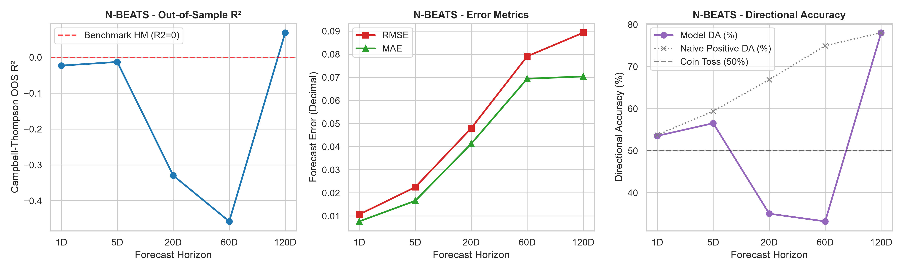
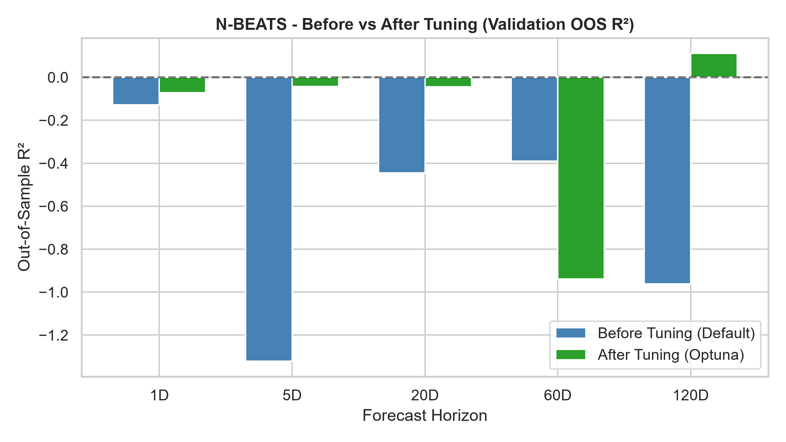
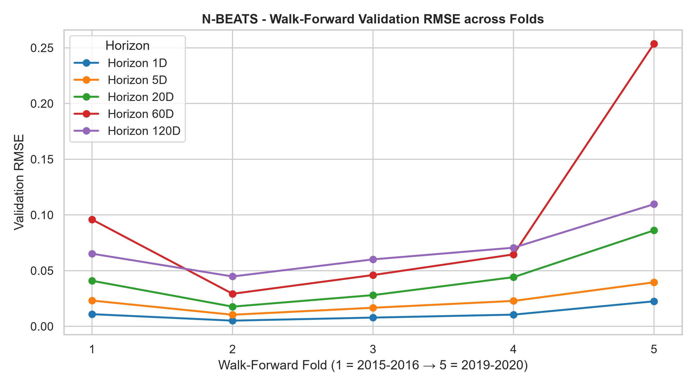

Volatility Regime Performance
Research Project: When Does Equity Return Predictability Decay? A Multi-Horizon and Regime-Dependent Out-of-Sample Analysis
Model Family: Advanced Time-Series Deep Learning | Model Category: Regression
Evaluation Status: Strict Walk-Forward Out-of-Sample & Independent Hold-out Verification
N-BEATS{'lookback': 20, 'num_stacks': 2, 'num_blocks': 1, 'hidden_dim': 128, 'dropout': 0.07783913355859318, 'learning_rate': 5.284119075490803e-05, 'weight_decay': 0.0001, 'batch_size': 32, 'epochs': 1000, 'patience': 7}The table below synthesizes predictive performance across the three evaluation stages. Note that Part A and Part B evaluate on Walk-Forward Validation (Split 2), whereas Part C evaluates on the strictly independent hold-out test set (Split 3).
| Evaluation Stage | OOS_R2 | RMSE | MAE | DA (%) | Naive Positive DA (%) | Excess DA (pp) | DM Statistic | DM p-value | Sign Test p-value | N |
|---|---|---|---|---|---|---|---|---|---|---|
| Part A – Before Tuning | -0.6489 | 0.0498 | 0.0386 | 55.76% | N/A | N/A | N/A | N/A | N/A | 1360 |
| Part B – After Tuning | -0.1972 | 0.049 | 0.0388 | 61.72% | N/A | N/A | N/A | N/A | N/A | 1360 |
| Part C – Final Independent Test | -0.1508 | 0.0499 | 0.0411 | 51.26% | 66.61% | -0.15 | -1.4633 | 0.7881 | 0.4010 | 1362 |
Analysis of predictive decay across horizons from ultra-short term (1D) to long-term macroeconomic horizon (120D).
| Horizon | OOS_R2 | RMSE | MAE | DA | Naive_Positive_DA | Excess_DA | DM_Stat | DM_pvalue | Sign_pvalue | Observations |
|---|---|---|---|---|---|---|---|---|---|---|
| 1D | -0.023 | 0.0107 | 0.0077 | 0.5352 | 0.5374 | -0.0022 | -1.4536 | 0.9269 | 0.005 | 1362 |
| 5D | -0.0128 | 0.0225 | 0.0166 | 0.5653 | 0.594 | -0.0286 | -0.7561 | 0.7751 | 0 | 1362 |
| 20D | -0.3295 | 0.048 | 0.0413 | 0.3502 | 0.6689 | -0.3186 | -3.0468 | 0.9988 | 1 | 1362 |
| 60D | -0.4574 | 0.0791 | 0.0694 | 0.3319 | 0.7496 | -0.4178 | -2.7572 | 0.997 | 1 | 1362 |
| 120D | 0.0687 | 0.0893 | 0.0704 | 0.7805 | 0.7805 | 0 | 0.6971 | 0.2429 | 0 | 1362 |

Performance breakdown conditioned on market volatility regimes (Low, Normal, High) constructed using expanding quantiles.
| Regime | OOS_R2 | RMSE | MAE | DA |
|---|---|---|---|---|
| Low | -0.38124 | 0.04026 | 0.03398 | 0.49096 |
| Normal | -0.27794 | 0.04596 | 0.03844 | 0.51052 |
| High | -0.03202 | 0.06044 | 0.05022 | 0.53222 |
Multi-dimensional matrix displaying performance across the 5 × 3 Horizon × Regime state space.
| Horizon | Low | Normal | High |
|---|---|---|---|
| 1D | -0.0375 | -0.0373 | -0.0137 |
| 5D | -0.0074 | 0.0111 | -0.0254 |
| 20D | -1.1571 | -0.7312 | 0.0087 |
| 60D | -0.7611 | -0.7466 | -0.1676 |
| 120D | 0.0569 | 0.1143 | 0.0379 |


Comparison between baseline default architecture parameters (Part A) and Optuna-optimized hyperparameters (Part B) on Walk-Forward Validation.
| Horizon | Before_OOS_R2 | After_OOS_R2 | Delta_OOS_R2 | Before_RMSE | After_RMSE | Delta_RMSE | Before_DA | After_DA | Delta_DA |
|---|---|---|---|---|---|---|---|---|---|
| 1D | -0.1275 | -0.0717 | 0.0558 | 0.0116 | 0.0114 | -0.0003 | 0.4897 | 0.4993 | 0.0096 |
| 5D | -1.3209 | -0.042 | 1.2789 | 0.0281 | 0.0225 | -0.0056 | 0.4838 | 0.5632 | 0.0794 |
| 20D | -0.4447 | -0.0441 | 0.4006 | 0.0509 | 0.0434 | -0.0075 | 0.5471 | 0.6228 | 0.0757 |
| 60D | -0.3895 | -0.9393 | -0.5498 | 0.0721 | 0.0979 | 0.0257 | 0.5735 | 0.6243 | 0.0507 |
| 120D | -0.9617 | 0.1113 | 1.073 | 0.0864 | 0.07 | -0.0163 | 0.6941 | 0.7765 | 0.0824 |

The Final Independent Hold-out Test (Split 3: 2020–2026, 1,362 days) serves as the definitive out-of-sample empirical evidence. All preprocessing steps and hyperparameter choices were completely frozen prior to test inference.
120D)Stability evaluation across the 5 expanding walk-forward folds (Split 2):
| Horizon | Mean_OOS_R2 | Std_OOS_R2 | Min_OOS_R2 | Max_OOS_R2 | Mean_RMSE | Std_RMSE | Mean_MAE | Mean_DA |
|---|---|---|---|---|---|---|---|---|
| 1D | -0.0717 | 0.0486 | -0.1537 | -0.0279 | 0.0114 | 0.0066 | 0.0075 | 0.4993 |
| 5D | -0.042 | 0.0433 | -0.1098 | 0.0102 | 0.0225 | 0.0108 | 0.0156 | 0.5632 |
| 20D | -0.0441 | 0.0695 | -0.16 | 0.017 | 0.0434 | 0.0261 | 0.0321 | 0.6228 |
| 60D | -0.9393 | 1.3552 | -3.0008 | 0.0036 | 0.0979 | 0.0905 | 0.0813 | 0.6243 |
| 120D | 0.1113 | 0.1725 | -0.1062 | 0.3255 | 0.07 | 0.0241 | 0.0574 | 0.7765 |

120D (OOS R² = 0.0687)60D (OOS R² = -0.4574)HighLow